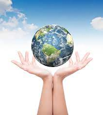

Este é um site feito pra consientizar as crianças e adolecentes sobre assuntos que modificam o mundo que eles vivem e podem acabar o degradando e destruindo as gerações que podem vir além de que mudar o mundo hoje pode evitar muitas catastrofes com do desmatamento, desperdício outros topicos afrente.


Eu e vocé temos o poder para ajudar o mundo a se levantar mesmo apos muitos anos de sofrimento e luta.